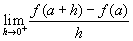
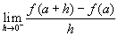

This device cannot display Java animations. The above is a substitute static image
1. A jump discontinuity
The applet initially shows a line with a jump discontinuity. What is the derivative of this function for x = 1?
Slowly drag the green dot towards the red dot. What happens to the slope of the green secant line? Why? Now drag the green dot to the left of the red dot, then slowly drag it back towards the red dot. Now what happens to the slope of the secant line? Dragging the green dot from the right towards the red dot is like starting h out bigger than zero and making it smaller. If this limit exists, it is called the right-hand derivative and is defined as

Note the + on the zero, which tells you this is a right-hand limit. Similarly, dragging the green dot from the left towards the red dot is like starting
h out negative and then making it approach zero. If this limit exists it is called the left-hand derivative and is defined as

In this example, the function has a right-hand derivative at
x = 1, which equals 1 (i.e., the slope of the line to the right), but the left-hand derivative is undefined, because it approaches infinity as
h approaches zero. So this function is not differentiable at
x = 1. This is true for all jump discontinuities.
2. A displaced point
Select the second example from the drop-down menu. This shows a line with a point displaced (it's in the same place as the red dot). What is the derivative of this function for x = 1? Slowly drag the green dot towards the red dot. What happens to the slope of the green secant line? Now move the green dot to the left of the red dot and slowly drag it back. What happens to the slope? In this case, neither the left-hand derivative or the right-hand derivative exist (both go to infinity), so the function is not differentiable at x = 1.
3. A missing point
Select the third example, which shows a line with a point missing. What is the derivative of this function for x = 1? In this case, the function isn't defined at x = 1, so in a sense it isn't "fair" to ask whether the function is differentiable there. A function is not differentiable for input values that are not in its domain.
4. A hyperbola
Select the fourth example, showing a hyperbola with a vertical asymptote. What is the derivative of this function for x = 1? Like the previous example, the function isn't defined at x = 1, so the function is not differentiable there. These examples illustrate that a function is not differentiable where it does not exist or where it is discontinuous.
5. Absolute value
Select the fifth example, showing the absolute value function (shifted up and to the right for clarity). What is the derivative at x = 1? This time, the function does exist for x = 1 and it is continuous there. Drag the green dot towards the red dot from the right and then from the left. What happens in each case to the slope of the green secant line? In this example, both the left-hand and right-hand derivatives exist, but they are different. When this happens, the general derivative does not exist (remember, a general limit exists only if the left-hand limit and the right-hand limit both exist and are the same), so the function is not differentiable at x = 1. Corners like this are places where the slope changes abruptly and cause the left-hand and right-hand derivatives to be different.
6. Power function with cusp
Select the sixth example. This shows a power function with a cusp, a very pointy piece of a graph. It is continuous at x = 0. Is there a derivative at x = 0? Drag the green dot from the left and from the right towards the red dot and notice the slope. Like corners, cusps can cause the slope to change abruptly, hence the function is not differentiable at x = 0.
7. Cube root
Select the seventh example, showing the cube root function. It, too, is continuous at x = 0, but is it differentiable there? Drag the green dot towards the red. It looks like the slope gets pretty big near the red dot. You can get closer by typing an x value in the input box, like 0.00001. In fact, the cube root function has a vertical tangent at x = 0, which means that the limit in the derivative is undefined at this point. Hence this function is not differentiable at x = 0. More generally, functions are not differentiable where they have vertical tangents.
Other differentiation topics
(C) 2011 Copyright Math Open Reference.
All rights reserved